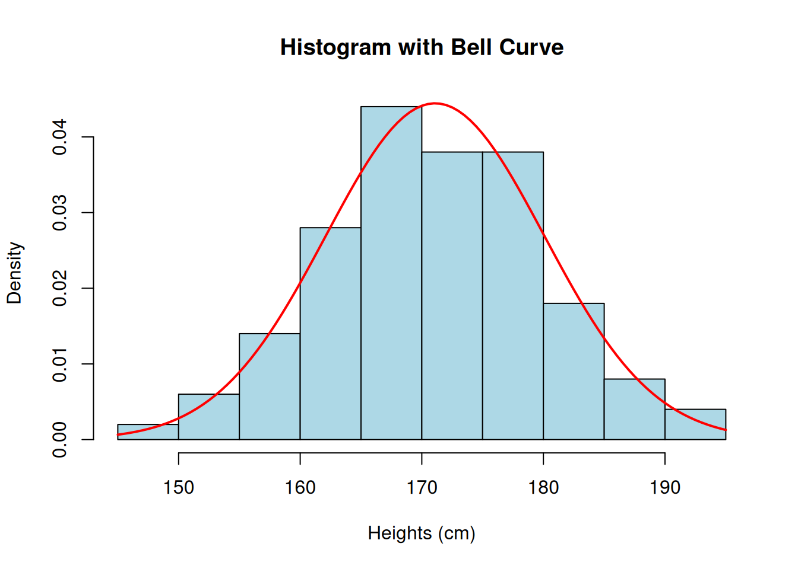

gene_name <- "BRCA1"
is.character(gene_name)[1] TRUEnum_samples <- 50
is.numeric(num_samples)[1] TRUEis_treated <- TRUE
is.logical(is_treated)[1] TRUEdna_bases <- c("A", "T", "G", "C")
is.character(dna_bases)[1] TRUEThe R script is available here: link
<- for assignment.Create variables to store the following types of biological data and check their class in R:
You have the following concentrations of a drug measured in five samples (in µM): 2.3, 5.1, 3.8, 6.4, 4.9. Perform the following tasks:
[1] 4.5[1] 1.537856You’re working with expression levels of three genes (geneA, geneB, geneC) across five samples. The expression levels are as follows:
sample1: 10, 12, 15
sample2: 20, 18, 22
sample3: 14, 16, 19
sample4: 8, 9, 7
sample5: 25, 30, 28 [,1] [,2] [,3] [,4] [,5]
[1,] 10 20 14 8 25
[2,] 12 18 16 9 30
[3,] 15 22 19 7 28 sample1 sample2 sample3 sample4 sample5
[1,] 10 20 14 8 25
[2,] 12 18 16 9 30
[3,] 15 22 19 7 28# Add row and column names
rownames(expression_levels) <- c("geneA", "geneB", "geneC")
colnames(expression_levels) <- c("sample1", "sample2", "sample3", "sample4", "sample5")
## or
rownames(expression_levels) <- paste0("gene", LETTERS[1:3])
colnames(expression_levels) <- paste0("sample", 1:5)
expression_levels sample1 sample2 sample3 sample4 sample5
geneA 10 20 14 8 25
geneB 12 18 16 9 30
geneC 15 22 19 7 28geneC expression is greater than 20.Use following code to generate the height (in cm) of 100 students:
[1] 163.7 171.8 161.6 186.0 173.3 161.8 174.9 177.4 175.8 166.9 185.1 173.9
[13] 163.8 147.9 181.2 169.6 169.8 179.4 178.2 175.9 179.2 177.8 170.7 150.1
[25] 176.2 169.4 168.4 155.3 165.2 174.2 183.6 169.0 173.9 169.5 156.2 165.9
[37] 166.1 169.4 181.0 177.6 168.4 167.5 177.0 175.6 163.1 162.9 173.6 177.7
[49] 168.9 178.8 174.0 163.9 173.4 158.7 184.3 189.8 166.3 159.6 175.7 168.6
[61] 194.0 169.6 176.9 170.3 162.6 171.9 152.0 184.7 171.5 191.7 174.8 162.9
[73] 176.1 160.7 157.5 172.9 165.6 170.0 170.7 164.1 164.3 168.6 181.8 154.8
[85] 175.9 173.3 180.6 167.0 173.7 172.7 164.6 182.1 181.6 177.0 185.9 175.6
[97] 157.2 164.3 157.8 165.3Normal Distribution
A normal distribution (also known as Gaussian distribution or “bell curve”), is a common way in which data tends to organize itself naturally when measured repeatedly in a population.
(figure obtained from this source)
It’s symmetric around the average (mean, \(\mu\)), and the spread of values depends on the standard deviation (\(\sigma\)). A a smaller \(\sigma\) results in values being tightly concentrated near the mean, while a larger \(\sigma\) results in values being more spread out across the range.
Many statistical tests, such as t-tests or ANOVAs, assume that the data follows a normal distribution. This assumption is important because it enables the calculation of probabilities and supports making reliable inferences. If the data does not follow a normal distribution, these tests may produce misleading results.
Shapiro-Wilk Test
The Shapiro-Wilk test is designed to check for deviations from normality, i.e., to check whether your data follows a normal distribution.
Test Hypotheses: H0, H1
When performing a statistical test, you start with two opposing ideas, called hypotheses, that you want to evaluate:
When you perform a statistical test, the goal is to decide whether you have enough evidence to reject the null hypothesis (H0) in favor of the alternative hypothesis (H1).
The function shapiro.test() in R allows to perform the test of normality.
Here, the null hypothesis (H0) is the heights are normally distributed, and the alternative hypothesis (H1) is the heights are not normally distributed.
P-value
The p-value is the probability of observing your data (or something more extreme) if the null hypothesis (H0) is true.
Type I error (\(\alpha\))
A type I error occurs when we reject the null hypothesis whereas it is actually true (false positive).
The probability (risk) of making a type I error is denoted as \(\alpha\), which also called the significance level. By choosing \(\alpha = 0.05\), you’re saying: “I’m willing to accept a 5% chance of incorrectly rejecting H0.”
If we take \(\alpha=0.05\): since the p-value (0.9876) is greater than 0.05, we fail to reject H0. This means there’s no strong evidence to suggest the heights are not normally distributed.
Let’s check the heights’ distribution with a histgram!
